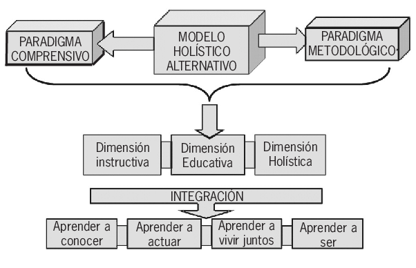

Ramas de la Ingeniería
La ingeniería civil es una disciplina fundamental que se encarga del diseño, construcción y mantenimiento de infraestructuras y obras públicas que son esenciales para el funcionamiento de la sociedad. Esto incluye una amplia variedad de proyectos, como edificios, puentes, carreteras, presas, sistemas de agua y saneamiento, y aeropuertos. Los ingenieros civiles aplican principios de matemáticas, física y materiales para resolver problemas complejos relacionados con el entorno construido. Su trabajo es crucial para asegurar que estas infraestructuras sean seguras, funcionales y sostenibles. Además, se enfrentan a desafíos como el cambio climático, la urbanización y la gestión de recursos naturales, lo que requiere soluciones innovadoras y sostenibles. La ingeniería civil también implica una fuerte responsabilidad social y ética, ya que las decisiones tomadas en esta área pueden tener un impacto duradero en la comunidad y el medio ambiente. Por ello, los ingenieros deben considerar aspectos como la seguridad, el impacto ambiental y el bienestar de la sociedad al desarrollar sus proyectos.
La ingeniería electrónica se dedica al diseño y desarrollo de circuitos y dispositivos electrónicos. Involucra el estudio de componentes como resistencias, capacitores y transistores, así como el uso de microcontroladores y sistemas integrados. Los ingenieros electrónicos trabajan en áreas como telecomunicaciones, sistemas de control, automatización y robótica. Su labor es fundamental en la creación de dispositivos cotidianos, desde teléfonos móviles hasta sistemas de navegación y equipos médicos. Además, la ingeniería electrónica se enfoca en la innovación de tecnologías emergentes, como el Internet de las Cosas (IoT) y la inteligencia artificial.
La ingeniería de software se ocupa de la creación y gestión de software de alta calidad. Esto incluye desde la planificación y el análisis de requisitos hasta el diseño, desarrollo, prueba y mantenimiento de aplicaciones. Los ingenieros de software aplican principios de programación y metodologías de desarrollo, como Agile y DevOps, para garantizar que los productos sean eficientes, escalables y seguros. Esta disciplina también aborda cuestiones como la gestión de proyectos, la colaboración en equipos multidisciplinarios y la garantía de calidad, todo con el objetivo de entregar software que cumpla con las necesidades del usuario y del negocio.
La ingeniería mecánica se centra en el diseño, análisis y fabricación de sistemas mecánicos. Combina conocimientos de física, matemáticas y materiales para resolver problemas relacionados con el movimiento y la energía. Los ingenieros mecánicos trabajan en diversas industrias, incluyendo la automotriz, la aeroespacial, la manufactura y la energía. Desarrollan productos como motores, herramientas, sistemas de calefacción y refrigeración, y maquinaria industrial. La innovación en esta disciplina es crucial para mejorar la eficiencia energética, reducir costos y aumentar la sostenibilidad de los procesos productivos.
La ingeniería industrial se dedica a optimizar sistemas y procesos en una organización. Esta disciplina se enfoca en la mejora continua de la productividad y la eficiencia mediante la integración de personas, materiales y tecnología. Los ingenieros industriales analizan flujos de trabajo, diseñan sistemas de producción y aplican técnicas de gestión, como el Six Sigma y la reingeniería de procesos. Su trabajo abarca diversas áreas, desde la logística y la gestión de la cadena de suministro hasta la ergonomía y el diseño organizacional, siempre con el objetivo de maximizar el valor y minimizar desperdicios.
La ingeniería química se centra en el diseño y operación de procesos que transforman materias primas en productos útiles a través de reacciones químicas y procesos físicos. Esta disciplina combina principios de química, biología y física para abordar desafíos en industrias como la petroquímica, la farmacéutica y la alimentaria. Los ingenieros químicos trabajan en el desarrollo de nuevos productos, la mejora de procesos existentes y la implementación de tecnologías sostenibles. Además, están involucrados en la investigación de soluciones para problemas ambientales, como la reducción de emisiones y la gestión de residuos.
La ingeniería biomédica aplica principios de ingeniería y ciencias de la salud para desarrollar tecnologías que mejoren la atención médica y la calidad de vida. Incluye el diseño de dispositivos médicos, sistemas de diagnóstico por imagen, prótesis y terapias avanzadas. Los ingenieros biomédicos colaboran con médicos y profesionales de la salud para crear soluciones innovadoras que aborden problemas clínicos. Además, trabajan en la investigación y el desarrollo de nuevas técnicas, como la ingeniería de tejidos y la bioinformática, contribuyendo a la personalización de tratamientos y al avance de la medicina regenerativa.
La ingeniería agrícola combina conocimientos de ingeniería y agricultura para mejorar la producción y la sostenibilidad en el sector agropecuario. Los ingenieros agrícolas diseñan y optimizan maquinaria, sistemas de riego y tecnologías de manejo de cultivos. También trabajan en la conservación de recursos naturales y en el desarrollo de prácticas agrícolas sostenibles que aumenten la eficiencia y reduzcan el impacto ambiental. Su labor es esencial para abordar los desafíos de la seguridad alimentaria y el cambio climático, contribuyendo a la innovación en técnicas de cultivo y producción de alimentos.
La ingeniería de minas se dedica a la extracción y procesamiento de recursos minerales de manera segura y eficiente. Los ingenieros de minas realizan estudios geológicos y de viabilidad para planificar operaciones mineras, diseñar minas y garantizar la seguridad de los trabajadores. También están involucrados en la gestión de impactos ambientales, buscando minimizar el daño a los ecosistemas y optimizar el uso de recursos. Esta disciplina es clave para asegurar el suministro de minerales y metales esenciales para diversas industrias, desde la construcción hasta la tecnología.
La ingeniería de telecomunicaciones se centra en el diseño, implementación y mantenimiento de sistemas de comunicación a distancia. Esto incluye la transmisión de datos, voz y video a través de redes de cable y tecnologías inalámbricas. Los ingenieros de telecomunicaciones trabajan en el desarrollo de infraestructuras de red, sistemas de satélites, comunicaciones móviles y tecnologías emergentes como 5G. Su labor es crucial para garantizar la conectividad global, permitiendo la comunicación eficiente y el intercambio de información en tiempo real, lo que impacta en todos los aspectos de la vida moderna.
Proceso de Ingeniería
El proceso de ingeniería es un conjunto de pasos sistemáticos para identificar, analizar y resolver problemas. Involucra la aplicación de principios científicos y matemáticos.
Identificación del Problema: Definición clara del problema.
Investigación y Análisis: Estudio detallado del problema.
Diseño: Generación de ideas y desarrollo de soluciones.
Implementación: Producción o construcción de la solución elegida.
Pruebas y Evaluación: Comprobación de que la solución cumple con los requisitos.
Mantenimiento y Optimización: Establecimiento de un plan de mantenimiento.
Ética en la Ingeniería
La ética de la ingeniería se centra en el comportamiento responsable de los ingenieros en su práctica profesional. Implica considerar el impacto de sus decisiones en la sociedad y el medio ambiente, asegurando que sus diseños sean seguros y sostenibles. Los ingenieros deben actuar con integridad y transparencia, manteniendo un compromiso con la competencia y la mejora continua. También es fundamental que trabajen en colaboración, respetando a sus colegas y a las comunidades a las que sirven. En esencia, la ética en la ingeniería busca promover un equilibrio entre la innovación y el bienestar social.
Innovación y Creatividad
La innovación y la creatividad son fundamentales en la ingeniería, ya que estas disciplinas se enfrentan constantemente a desafíos complejos que requieren soluciones originales y efectivas. Los ingenieros no solo aplican principios técnicos y científicos, sino que también deben pensar de manera crítica y creativa para diseñar, desarrollar y mejorar productos, sistemas y procesos. La innovación en ingeniería implica la creación de nuevas ideas y la implementación de tecnologías que mejoren la calidad de vida, la eficiencia y la sostenibilidad. Esto puede manifestarse en diversas formas, desde el desarrollo de nuevas herramientas y materiales hasta la creación de sistemas complejos que integren diferentes disciplinas. Por ejemplo, en la ingeniería civil, la innovación puede traducirse en técnicas de construcción que utilizan materiales reciclados o en el diseño de infraestructuras que minimizan el impacto ambiental. Por otro lado, la creatividad es el motor detrás de la innovación. Los ingenieros deben ser capaces de pensar fuera de lo convencional, de cuestionar suposiciones y de abordar problemas desde múltiples perspectivas. Este proceso a menudo requiere un entorno de trabajo colaborativo donde se fomenten el intercambio de ideas y la experimentación. La creatividad no se limita a la estética; en la ingeniería, se trata de encontrar soluciones prácticas y efectivas a problemas reales. Además, la rápida evolución de la tecnología y las demandas del mercado impulsan a los ingenieros a estar siempre aprendiendo y adaptándose. La integración de tecnologías emergentes, como la inteligencia artificial y la robótica, está revolucionando la forma en que se desarrollan los proyectos de ingeniería. Estas herramientas no solo aumentan la eficiencia, sino que también abren nuevas posibilidades para la innovación. La innovación y la creatividad también juegan un papel crucial en la resolución de problemas sociales y ambientales. Los ingenieros están llamados a abordar desafíos globales como el cambio climático, la escasez de recursos y el acceso a servicios básicos. A través de enfoques creativos, pueden diseñar soluciones que no solo sean técnicamente viables, sino que también sean éticamente responsables y sostenibles.
Sostenibilidad y Medio Ambiente
La sostenibilidad y el cuidado del medio ambiente son aspectos esenciales en la ingeniería actual. A medida que la población mundial crece y se intensifican los desafíos ambientales, los ingenieros tienen la responsabilidad de diseñar soluciones que minimicen el impacto ecológico y promuevan un uso responsable de los recursos. Sostenibilidad en Ingeniería La sostenibilidad en ingeniería implica el desarrollo de proyectos y tecnologías que no solo satisfacen las necesidades actuales, sino que también preservan los recursos para las futuras generaciones. Esto incluye: Uso Eficiente de Recursos: Implica la selección de materiales y procesos que reducen el consumo de energía y materias primas, así como la minimización de residuos. Energías Renovables: La incorporación de fuentes de energía como la solar, eólica y geotérmica es fundamental para reducir la dependencia de combustibles fósiles y disminuir las emisiones de gases de efecto invernadero. Diseño Sostenible: Los ingenieros aplican principios de diseño que consideran la sostenibilidad desde la fase inicial de un proyecto, buscando crear edificaciones y sistemas que sean energéticamente eficientes y que tengan un bajo impacto ambiental. Mitigación del Impacto Ambiental Los ingenieros realizan evaluaciones de impacto ambiental para anticipar y minimizar los efectos negativos de sus proyectos. Esto incluye: Preservación de Ecosistemas: Considerar el impacto en la biodiversidad y los ecosistemas locales al planificar obras de construcción y desarrollo. Gestión de Residuos: Desarrollar estrategias para reducir, reutilizar y reciclar materiales, promoviendo una economía circular donde los desechos se convierten en recursos. Innovación y Tecnología La innovación juega un papel crucial en la ingeniería sostenible. Nuevas tecnologías y enfoques, como el uso de materiales biodegradables y sistemas de captura de carbono, están en constante desarrollo. Estas innovaciones buscan no solo mitigar el daño ambiental, sino también crear soluciones que sean viables económicamente. Educación y Conciencia La formación en sostenibilidad está cobrando relevancia en los programas académicos de ingeniería, preparando a los futuros profesionales para abordar los retos ambientales de manera efectiva. Además, existe una creciente conciencia sobre la responsabilidad social y ética que tienen los ingenieros en la toma de decisiones. En resumen, la sostenibilidad y el cuidado del medio ambiente son fundamentales en la ingeniería moderna. A través de enfoques responsables e innovadores, los ingenieros contribuyen a crear un futuro más sostenible que beneficie tanto a las personas como al planeta.
Fundamentos de Ingeniería de Sistemas
La ingeniería de sistemas es un enfoque multidisciplinario que se centra en el diseño, desarrollo, implementación y gestión de sistemas complejos. Sus fundamentos se basan en varios principios y conceptos clave:
Enfoque Holístico:
Se considera el sistema en su totalidad, incluyendo sus componentes y las interacciones entre ellos. Esto implica entender cómo cada parte contribuye al funcionamiento general.
Análisis y Diseño:
Se utiliza el análisis para entender los requisitos y el diseño para crear soluciones que satisfagan esos requisitos. Esto incluye herramientas y técnicas como diagramas de flujo, modelos de datos y prototipos.

Ciclo de Vida del Sistema:
Se sigue un proceso estructurado (SDLC) que guía el desarrollo del sistema desde la concepción hasta el retiro, asegurando que se aborden todas las etapas necesarias.

Requisitos del Usuario
Se enfatiza la importancia de comprender y documentar las necesidades del usuario para asegurar que el sistema final sea útil y usable.

Interdisciplinariedad:
Combina conocimientos de diversas áreas, como informática, ingeniería, administración, y ciencias sociales, para abordar problemas complejos.
Gestión de Proyectos
Se aplican principios de gestión para planificar, ejecutar y supervisar proyectos, asegurando que se cumplan los plazos, presupuestos y estándares de calidad.

Evaluación y Pruebas:
Se implementan métodos para evaluar el rendimiento del sistema y realizar pruebas rigurosas para identificar y corregir errores antes de la implementación.

Sostenibilidad y Mantenimiento:
Se considera la necesidad de mantener y actualizar los sistemas a lo largo del tiempo, garantizando su relevancia y eficiencia.

Modelado y Simulación:
Se utilizan modelos para representar sistemas y simular su comportamiento en diferentes condiciones, lo que ayuda en la toma de decisiones y en la identificación de problemas.

Ciclo de Vida del Sistema
El ciclo de vida del sistema (SDLC) es un marco que describe las etapas por las que pasa un sistema de información desde su concepción hasta su retiro. Cada etapa es crucial para asegurar que el sistema cumpla con los requisitos y expectativas del usuario. A continuación, se presenta una visión general de las etapas típicas del SDLC:
Planificación:
Se establece el alcance del proyecto, se identifican las necesidades y se asignan recursos. Aquí se define la viabilidad y se elabora un cronograma.
Análisis de Requisitos:
Se recogen y documentan los requisitos del sistema a través de entrevistas, encuestas y análisis de documentos. Esto incluye comprender las necesidades de los usuarios y del negocio.
Diseño:
Se elabora la arquitectura del sistema y se diseñan los componentes técnicos. Esto abarca el diseño de la interfaz de usuario, la estructura de la base de datos y la lógica del sistema.
Desarrollo:
En esta etapa, los programadores escriben el código y construyen el sistema de acuerdo con las especificaciones del diseño. Se crea la documentación técnica necesaria.
Pruebas:
Se realizan diversas pruebas para verificar que el sistema funciona correctamente y cumple con los requisitos. Esto incluye pruebas unitarias, de integración y de aceptación por parte del usuario.
Implementación:
El sistema se despliega en el entorno de producción. Esto puede incluir la capacitación de los usuarios y la migración de datos desde sistemas antiguos.
Mantenimiento:
Después de la implementación, el sistema requiere mantenimiento para corregir errores, realizar mejoras y adaptarse a cambios en las necesidades del usuario o del entorno.
Retiro:
Cuando el sistema se vuelve obsoleto, se planifica su desactivación y se migran los datos y funciones a un nuevo sistema.
Modelamientos de Sistemas
El modelamiento de sistemas es una técnica que permite representar y analizar sistemas complejos para comprender su estructura y comportamiento. A través de modelos, se facilita la comunicación entre los involucrados, se documentan las características del sistema y se realiza un análisis para validar requisitos antes de la implementación. Los modelos pueden ser estructurales, que muestran la organización de los componentes; comportamentales, que describen cómo interactúan esos componentes a lo largo del tiempo; y de datos, que se centran en la estructura de la información. Se utilizan herramientas como UML (Unified Modeling Language) y diferentes tipos de diagramas para crear estas representaciones. Los beneficios del modelamiento incluyen la reducción de riesgos, la mejora de la calidad del diseño y la facilidad de mantenimiento en el futuro.
Requerimientos de Sistemas
Los requerimientos de sistema son especificaciones que definen lo que un sistema debe hacer y las condiciones en las que debe operar. Se dividen en dos categorías principales: funcionales, que describen las funciones que debe realizar el sistema (como permitir el registro de usuarios), y no funcionales, que especifican características como rendimiento y seguridad (por ejemplo, que el sistema debe cargar en menos de 3 segundos). Los requerimientos también pueden ser de usuario, que se centran en las necesidades de los usuarios finales, y del sistema, que abordan aspectos técnicos y del entorno en el que operará el software. El proceso para recolectar estos requerimientos implica identificar a los interesados, utilizar técnicas como entrevistas y encuestas, y documentar todo de manera clara. Luego, se validan y gestionan para asegurar que se mantengan alineados con las expectativas a lo largo del desarrollo.
Arquitectura de Sistemas
La arquitectura de sistemas se refiere a la estructura y organización de un sistema, así como a las interacciones entre sus componentes. El diseño de arquitectura es crucial para asegurar que un sistema cumpla con sus requisitos funcionales y no funcionales. A continuación, se presentan los conceptos clave en este ámbito:
Conceptos Clave en Arquitectura de Sistemas
Componentes: Elementos individuales que forman el sistema, como módulos, servicios o bases de datos. Conectores: Mecanismos que permiten la comunicación entre componentes, como API, colas de mensajes o protocolos de red. Patrones de Diseño: Soluciones reutilizables para problemas comunes en el diseño de software, como el patrón MVC (Modelo-Vista-Controlador) o el patrón Microservicios. Capa de Abstracción: Separación de la lógica de negocio, la interfaz de usuario y la persistencia de datos para mejorar la mantenibilidad y la escalabilidad. Escalabilidad: Capacidad del sistema para manejar un aumento en la carga de trabajo o el número de usuarios. Resiliencia: Capacidad del sistema para recuperarse de fallos y continuar funcionando. Seguridad: Integración de mecanismos para proteger el sistema contra accesos no autorizados y ataques.
Diseño de Arquitectura
Recolección de Requisitos: Identificar y documentar los requisitos funcionales y no funcionales del sistema. Análisis de Contexto: Entender el entorno en el que operará el sistema, incluyendo restricciones y dependencias. Definición de Componentes y Conectores: Especificar los componentes del sistema y cómo se comunicarán entre sí. Selección de Patrones de Diseño: Elegir patrones de diseño que se alineen con los requisitos y el contexto del sistema. Modelo de Arquitectura: Crear diagramas que representen la arquitectura del sistema (diagramas de flujo, diagramas de componentes, etc.). Evaluación de la Arquitectura: Revisar la arquitectura propuesta en base a criterios como rendimiento, escalabilidad y mantenibilidad. Documentación: Documentar la arquitectura para que otros puedan entender y mantener el sistema.
Herramientas y Técnicas
Diagrama de Arquitectura: Representaciones visuales que ilustran los componentes y sus interacciones. Herramientas de Modelado: Software como UML, ArchiMate o herramientas de diagramación para visualizar la arquitectura. Análisis de Riesgos: Evaluar posibles problemas y definir estrategias de mitigación.
Importancia del Diseño de Arquitectura
Guía para el Desarrollo: Proporciona un marco para el desarrollo y ayuda a los equipos a mantenerse alineados. Facilita el Mantenimiento: Una buena arquitectura hace que el sistema sea más fácil de mantener y extender en el futuro. Mejora la Calidad del Software: Una arquitectura bien diseñada ayuda a cumplir con los requisitos de calidad y rendimiento.
Métodos de Desarrollo de Software
Las metodologías ágiles son enfoques para el desarrollo de software que enfatizan la flexibilidad, la colaboración y la entrega continua de valor. Aquí hay algunos conceptos clave y ejemplos de metodologías ágiles:
Principios Fundamentales
Colaboración: Fomentar la comunicación constante entre los equipos y los interesados. Iteración: Desarrollar el software en ciclos cortos (sprints) que permiten la mejora continua. Adaptación: Responder a cambios en los requisitos, incluso en etapas avanzadas del desarrollo. Entrega continua: Producir versiones funcionales del software de manera frecuente.
Ejemplos de Metodologías Ágiles
Scrum: Se basa en sprints (ciclos de trabajo cortos, generalmente de 2 a 4 semanas). Roles clave: Product Owner, Scrum Master y el equipo de desarrollo. Ceremonias: reuniones diarias (daily stand-ups), planificación del sprint, revisión del sprint y retrospectiva. Kanban: Se centra en visualizar el flujo de trabajo y gestionar el trabajo en progreso. Utiliza un tablero Kanban para mostrar las tareas y su estado (pendiente, en progreso, completado). Promueve la mejora continua y la limitación del trabajo en curso. Extreme Programming (XP): Se enfoca en la calidad del software y la satisfacción del cliente. Prácticas clave: programación en parejas, desarrollo guiado por pruebas (TDD) y entrega frecuente. Fomenta la retroalimentación constante con los usuarios. Lean Software Development: Inspirada en los principios de manufactura Lean. Busca eliminar el desperdicio y optimizar el flujo de trabajo. Enfatiza la entrega de valor al cliente y la mejora continua.
Beneficios de las Metodologías Ágiles
Flexibilidad: Capacidad de adaptarse a cambios rápidamente. Colaboración: Mejora la comunicación entre equipos y partes interesadas. Calidad: Fomenta la entrega continua de software funcional y de calidad. Satisfacción del cliente: Se enfoca en las necesidades del cliente, lo que conduce a un producto final más alineado con sus expectativas.
Desafíos
Resistencia al cambio: Algunos equipos pueden estar acostumbrados a enfoques más tradicionales. Escalabilidad: Implementar metodologías ágiles en equipos grandes o distribuidos puede ser complicado. Disciplina: Requiere un alto nivel de compromiso y organización por parte de todos los miembros del equipo.
Pruebas de Validación de Sistemas
Las pruebas de validación de sistemas son fundamentales para garantizar que un software cumple con los requisitos establecidos y funciona correctamente en su entorno previsto. Existen varios tipos de pruebas, cada una con un enfoque específico. Aquí te presento un resumen de los tipos más comunes:
Pruebas Funcionales
Estas pruebas se centran en verificar que las funciones del software cumplen con los requisitos especificados. Se dividen en: Pruebas de Unidad: Verifican componentes individuales del software de forma aislada. Pruebas de Integración: Evaluan la interacción entre diferentes módulos o sistemas. Pruebas de Sistema: Prueban el sistema completo en su conjunto para asegurar que funciona como se espera. Pruebas de Aceptación: Realizadas por el usuario final para validar que el sistema cumple con sus necesidades y requisitos.
Pruebas No Funcionales
Estas pruebas evalúan aspectos que no están directamente relacionados con las funcionalidades, como el rendimiento y la usabilidad. Incluyen: Pruebas de Rendimiento: Miden la velocidad, capacidad de respuesta y estabilidad del sistema bajo diferentes condiciones de carga. Pruebas de Carga: Evalúan cómo el sistema maneja un número específico de usuarios simultáneos. Pruebas de Estrés: Ponen el sistema bajo condiciones extremas para identificar su punto de fallo. Pruebas de Usabilidad: Evaluan la experiencia del usuario y la facilidad de uso del sistema.
Pruebas de Seguridad
Estas pruebas se centran en identificar vulnerabilidades y garantizar que el sistema protege los datos y la información sensible. Incluyen: Pruebas de Penetración: Simulan ataques para evaluar la seguridad del sistema. Pruebas de Vulnerabilidad: Identifican posibles brechas de seguridad en el software.
Pruebas de Regresión
Se realizan después de cambios en el software (como correcciones de errores o nuevas funcionalidades) para asegurar que las modificaciones no hayan afectado negativamente las funciones existentes.
Pruebas de Compatibilidad
Verifican que el software funcione adecuadamente en diferentes dispositivos, navegadores, sistemas operativos y configuraciones de hardware.
Pruebas de Instalación:
Evalúan el proceso de instalación y configuración del software, asegurando que se complete sin errores y que el sistema esté listo para usarse.
Pruebas de recuperación
Se centran en evaluar la capacidad del sistema para recuperarse de fallos o errores. Esto incluye la recuperación de datos y la restauración de servicios después de un incidente.
Gestión de Proyectos
La gestión de proyectos es un proceso fundamental que se encarga de planificar, ejecutar y supervisar proyectos con el objetivo de alcanzar resultados específicos dentro de un tiempo y presupuesto determinados. Comienza con la definición clara de los objetivos, el alcance y los resultados esperados, lo que permite establecer una base sólida para el desarrollo del proyecto. En la fase de planificación, se elabora un plan detallado que incluye las tareas a realizar, los recursos necesarios y los plazos correspondientes. Esta planificación puede visualizarse a través de herramientas como diagramas de Gantt, que ayudan a organizar las actividades de manera efectiva. Además, se estima el presupuesto y se identifican los recursos humanos, financieros y materiales necesarios, asignando roles y responsabilidades a cada miembro del equipo. La identificación y evaluación de riesgos son también cruciales en esta fase, permitiendo desarrollar estrategias para mitigar problemas potenciales que podrían afectar el progreso del proyecto. Un buen plan de contingencia asegura que se pueda reaccionar de manera adecuada ante imprevistos. Durante la ejecución, se lleva a cabo la implementación del plan, realizando las actividades según lo programado y manteniendo una comunicación constante con el equipo y los interesados. Monitorear el progreso es esencial, utilizando indicadores clave para comparar el avance real con el planificado, lo que permite identificar desviaciones y ajustar el enfoque si es necesario. La gestión de cambios es otra parte crítica, ya que durante la ejecución pueden surgir modificaciones en el alcance, el tiempo o el presupuesto. Ser capaz de evaluar el impacto de estos cambios y comunicarlos adecuadamente a todos los interesados es vital para mantener la cohesión del proyecto. Finalmente, al concluir el proyecto, se realiza una revisión exhaustiva para asegurarse de que todos los objetivos se han cumplido. Documentar las lecciones aprendidas permite mejorar las futuras
Interacción Humano-Computadora
La Interacción Humano-Computadora (IHC) es un campo interdisciplinario que se centra en cómo los humanos interactúan con computadoras y dispositivos tecnológicos. Su objetivo principal es diseñar interfaces que faciliten una comunicación efectiva y intuitiva entre las personas y las máquinas. En un mundo cada vez más digital, la IHC se ha vuelto esencial para garantizar que los sistemas sean accesibles, usables y agradables para los usuarios.
Este campo abarca una variedad de disciplinas, incluyendo la psicología, la ergonomía, el diseño gráfico, la informática y la sociología, entre otras. La IHC no solo se enfoca en el diseño de la interfaz de usuario, que incluye elementos como botones, menús e iconos, sino también en la manera en que los usuarios interactúan con estos elementos a través de diferentes dispositivos de entrada, como teclados, ratones, pantallas táctiles y controles de voz.
Un aspecto crucial de la IHC es la usabilidad, que se refiere a la facilidad con la que los usuarios pueden entender y utilizar un sistema. Esto implica que las interfaces deben ser intuitivas y claras, permitiendo que los usuarios completen tareas sin frustraciones innecesarias. La accesibilidad también juega un papel importante, asegurando que personas con diversas habilidades, incluidas aquellas con discapacidades, puedan interactuar con la tecnología sin obstáculos.
Para evaluar la efectividad de las interfaces, se utilizan diversas metodologías. Las pruebas de usabilidad son comunes y se llevan a cabo con usuarios reales que interactúan con el sistema. Esto ayuda a identificar problemas y áreas de mejora. Además, encuestas y entrevistas se utilizan para recopilar opiniones sobre la experiencia del usuario, mientras que el análisis de tareas permite observar cómo se llevan a cabo las actividades específicas en la interfaz.
Con el avance de la tecnología, la IHC ha evolucionado para incorporar nuevas tendencias, como la interacción natural, que utiliza gestos, voz y reconocimiento facial. También ha dado lugar a experiencias más inmersivas mediante la realidad aumentada y virtual. En este contexto, el diseño centrado en el usuario se ha vuelto fundamental, enfocándose en comprender las necesidades, comportamientos y expectativas de los usuarios durante el proceso de diseño.
Información Adicional Profe
Cambio Climático y Sostenibilidad:
La ingeniería enfrenta el reto de desarrollar tecnologías y materiales que reduzcan las emisiones de carbono, mejoren la eficiencia energética y minimicen el impacto ambiental. Esto incluye desde energías renovables hasta técnicas de reciclaje avanzado y almacenamiento de energía.
Transporte y Movilidad Sostenible:
Con el crecimiento de la población urbana, es necesario innovar en transporte público, vehículos eléctricos, infraestructura para bicicletas y soluciones de movilidad compartida, además de resolver la congestión de tráfico y reducir la contaminación.
Inteligencia Artificial y Ética:
La ingeniería debe asegurarse de que el desarrollo de la IA y el aprendizaje automático se haga de manera ética, considerando la privacidad de datos, el sesgo en algoritmos y el impacto en los empleos.
Ciberseguridad y Protección de Datos:
Con el aumento de dispositivos conectados, proteger la información y los sistemas críticos es crucial. Esto incluye asegurar la privacidad de los usuarios y proteger infraestructuras sensibles como sistemas de energía y de salud.
Ingeniería Biomédica y Salud:
Hay un gran desafío en desarrollar nuevas tecnologías para mejorar los diagnósticos, tratamientos y dispositivos médicos. Esto incluye la ingeniería genética, la impresión de órganos en 3D, y los sistemas de salud conectados.
Desarrollo de Infraestructura Resiliente:
Construir infraestructura resistente a fenómenos naturales (terremotos, huracanes, etc.) y al cambio climático es esencial. La ingeniería debe crear edificios, carreteras y puentes que puedan adaptarse y soportar estas condiciones extremas.
Ingeniería de Materiales y Nanotecnología:
Innovar en nuevos materiales, desde materiales ligeros y resistentes hasta los que tienen propiedades específicas (como conductividad o flexibilidad) es clave en múltiples industrias, desde electrónica hasta construcción y medicina.
Agua y Saneamiento:
El acceso al agua potable y sistemas de saneamiento eficaces es un reto global. La ingeniería debe desarrollar métodos para la gestión sostenible del agua, así como tecnologías de desalinización y purificación.
Exploración Espacial y Colonización:
La ingeniería enfrenta el desafío de desarrollar tecnología para la exploración y posible colonización de otros planetas, lo que implica la creación de naves, hábitats sostenibles y sistemas de soporte de vida para condiciones extremas.
Educación y Desarrollo de Habilidades:
La rápida evolución tecnológica requiere que los ingenieros se actualicen constantemente. Mejorar la educación en ingeniería y fomentar habilidades en áreas emergentes como la robótica, la IA y la sostenibilidad es crucial.